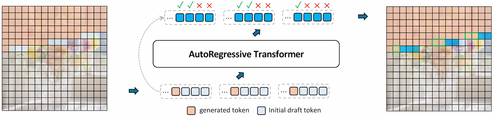

An illustration of one PJD iteration. (Left) Three rows become simultaneously active, each initializing three draft tokens. (Middle) All active rows are processed in one forward pass of the autoregressive transformer, followed by row-wise validation: accepted tokens are committed, while rejected ones are reused as the initial drafts for the next iteration. (Right) Each row’s sliding window advances after validation.